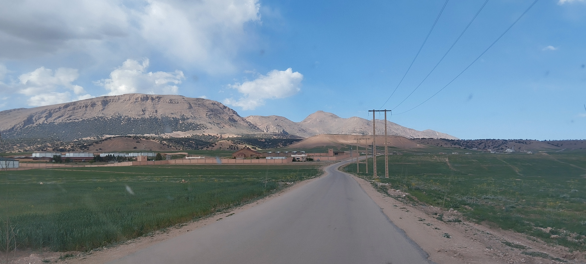

Discover the history of this unique village, its mountain climate, its traditions, and its key infrastructures.
One of the coldest climates in Africa. Long winters and heavy snows forge the resilient character of the local population.
Sheep farming and transhumance have structured the local economy for centuries, proudly passed down from generation to generation.
The Tamazight language, proverbs, and oral traditions form an exceptional living heritage that unites all the families of the village.
The heights of Tichoukt are the historical territory of Amazigh tribes living from pastoral farming.
The Joua depression has long served as a winter refuge and a transhumance corridor for herds.
Protected by the mountains, these communities have long preserved their independence and local customs.
The arrival of electricity, drinking water, and road improvements are gradually opening up the village.

"In a closed mouth, flies do not enter." — Amazigh proverb.
Oumjniba has gradually developed its facilities to improve the quality of life of its residents, despite geographical challenges.
The village school welcomes the children of the village, ensuring basic education without having to travel dozens of kilometers.
A place of worship but also a central landmark of the spiritual and social life of the village since its foundation.
The connection and local management of drinking water have radically transformed daily life, especially for women.
Motorable tracks connect the village to Boulemane, requiring constant snow clearing during the winter season.